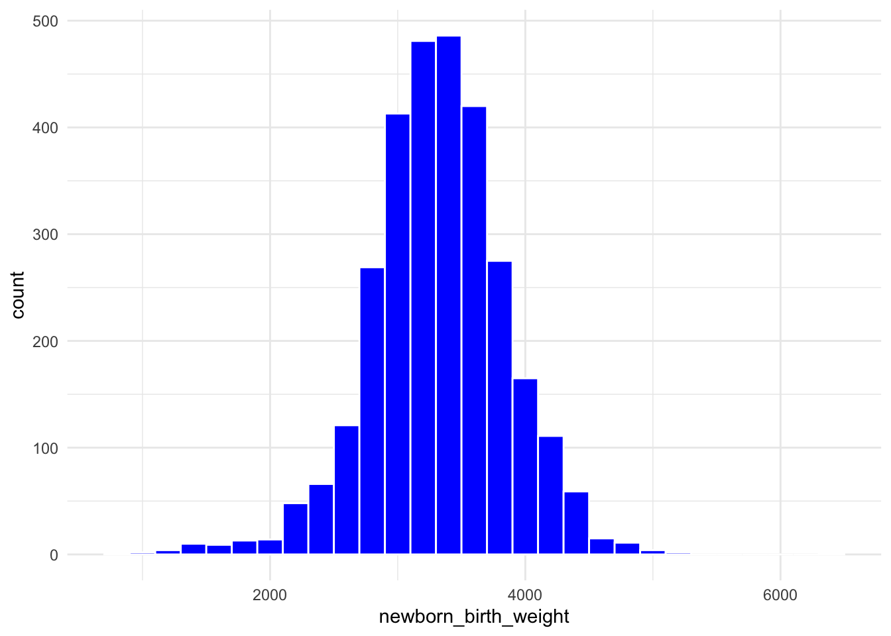
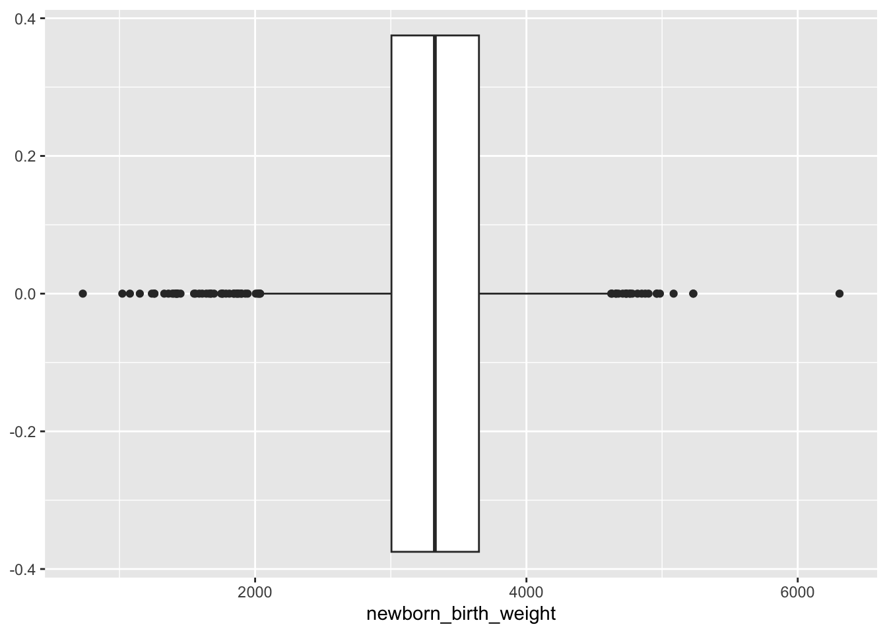
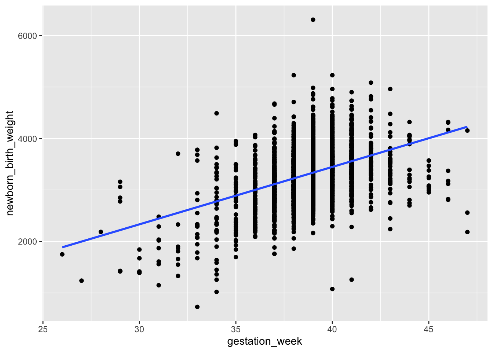
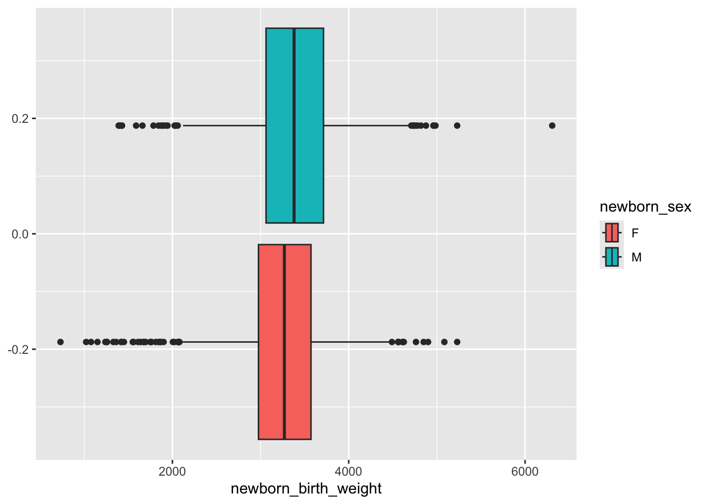

library(tidyverse)
library(tidymodels)
births <- read_csv("us_births.csv")Project 1 - Linear Regression
MTH 161 – Section H, I – Fall 2024
Project
1 Introduction
For this project you will investigate a dataset containing a sample of observations from 2020 of US birth data originally sourced from the Centers for Disease Control (CDC).
The goals are to demonstrate your understanding of concepts and techniques covered in the first half of the semester in the context of this dataset. These concepts include
- Visualizing and interpreting variables
- Visualizing associations between variables
- Formulating research questions, including the role of explanatory and response variables
- Constructing and interpreting linear models
- Drawing appropriate conclusions from analysis and communicating them clearly and accurately
Data
You will use the data set us_births.csv to fit your model. You can load it using the code below.
This data set contains 3000 observations of 16 variables. The variables are described in the codebook below.
Codebook
newborn_birth_weight: newborn birth weight in gramsmonth: birth month (1: January, …, 12: December)mother_age: age of the mother in yearsprenatal_care_starting_month: month in which prenatal care began; if 0, there was no prenatal caredaily_cigarette_prepregnancy: daily number of cigarettes smoked before the pregnancydaily_cigarette_trimester_1: daily number of cigarettes smoked during the 1st trimester of the pregnancydaily_cigarette_trimester_2: daily number of cigarettes smoked during the 2nd trimester of the pregnancydaily_cigarette_trimester_3: daily number of cigarettes smoked during the 3rd trimester of the pregnancymother_height: height of the mother in inchesmother_bmi: body mass index of the mothermother_weight_prepregnancy: weight of the mother before the pregnancy in poundsmother_weight_delivery: weight of the mother at delivery in poundsmother_diabetes_gestational: whether the mother had diabetes during the pregnancynewborn_sex: sex of the newborngestation_week: number of gestational weeksmother_risk_factors: whether the mother had any risk factor (diabetes, hypertension, previous preterm birth, previous cesarean, infertility treatment used, etc)
glimpse(births)Rows: 3,000
Columns: 16
$ newborn_birth_weight <dbl> 3572, 3290, 3459, 3685, 2405, 3946, 3433,…
$ month <dbl> 2, 3, 3, 12, 8, 2, 4, 5, 6, 5, 6, 4, 1, 7…
$ mother_age <dbl> 29, 32, 33, 36, 22, 27, 28, 38, 29, 38, 3…
$ prenatal_care_starting_month <dbl> 2, 4, 3, 2, 2, 2, 3, 2, 4, 3, 3, 2, 3, 2,…
$ daily_cigarette_prepregnancy <dbl> 0, 0, 0, 0, 0, 0, 0, 0, 0, 0, 0, 20, 0, 0…
$ daily_cigarette_trimester_1 <dbl> 0, 0, 0, 0, 0, 0, 0, 0, 0, 0, 0, 5, 0, 0,…
$ daily_cigarette_trimester_2 <dbl> 0, 0, 0, 0, 0, 0, 0, 0, 0, 0, 0, 0, 0, 0,…
$ daily_cigarette_trimester_3 <dbl> 0, 0, 0, 0, 0, 0, 0, 0, 0, 0, 0, 0, 0, 0,…
$ mother_height <dbl> 69, 65, 62, 69, 66, 68, 66, 64, 61, 66, 6…
$ mother_bmi <dbl> 36.2, 30.8, 23.4, 22.7, 22.6, 38.0, 26.6,…
$ mother_weight_prepregnancy <dbl> 245, 185, 128, 154, 140, 250, 165, 180, 1…
$ mother_weight_delivery <dbl> 290, 190, 153, 195, 168, 289, 197, 205, 1…
$ mother_diabetes_gestational <chr> "Y", "N", "N", "N", "N", "N", "N", "N", "…
$ newborn_sex <chr> "M", "F", "M", "M", "F", "F", "M", "F", "…
$ gestation_week <dbl> 37, 38, 39, 38, 37, 39, 39, 34, 43, 39, 3…
$ mother_risk_factor <lgl> TRUE, FALSE, FALSE, FALSE, FALSE, FALSE, …2 Preliminary investigations
The purpose of this project is to investigate possible associations between newborn_birth_weight and other variables in the dataset. In this section, you will perform some prelimary investigations to help you formulate a research question.
ggplot( births, aes(x = newborn_birth_weight)) +
geom_histogram(binwidth = 200, col="white", fill="blue") +
theme_minimal()
ggplot( births, aes(x = newborn_birth_weight)) +
geom_boxplot()
ggplot(births, aes(x=mother_weight_delivery, y = newborn_birth_weight)) +
geom_point() +
geom_smooth(method = "lm", se = FALSE)ggplot(births, aes(x=mother_height, y = newborn_birth_weight)) +
geom_point() +
geom_smooth(method = "lm", se = FALSE)ggplot(births, aes(x=gestation_week, y = newborn_birth_weight)) +
geom_point() +
geom_smooth(method = "lm", se = FALSE)`geom_smooth()` using formula = 'y ~ x'
ggplot(births, aes(x=newborn_birth_weight, fill= newborn_sex)) +
geom_boxplot()
ggplot(births, aes(x=newborn_birth_weight, fill= mother_risk_factor)) +
geom_boxplot()ggplot(births, aes(x=newborn_birth_weight, fill= mother_diabetes_gestational)) +
geom_boxplot()3 Main report
The remainder of your report will focus on an investigation of the variable you selected above (as it relates to birth weight). Your job is to carry out an analysis of any potential association and summarize your findings below.
Research question
As a researcher, your investigation should begin with a clearly-formulated, measurable research question. What are you hoping to discern with this analysis and why should the reader be interested in the results? Having an initial hypothesis can help shape your specific research question and guide the study design overall. In this section, you will demonstrate proficiency in asking meaningful questions (that you later answer using data).
Example research question and hypotheses (if we were predicting penguin weights instead of baby weights):
Can penguin bill depth be used to predict body mass? Having an answer to this question could help inform the design of future studies of wild penguins and provide useful data for those who work with captive penguin populations. Many other variables (e.g., calories needed) and interventions (e.g., amount of antibiotic to administer) relate directly to body mass. We hypothesize that penguins with deeper bills will also have more mass.
Methodology
In this section, you will explain the methods used to investigate the association between variables. You will also demonstrate proficiency in using R to perform and visualize linear regression.
births |>
summarize( mean_x = mean(gestation_week, na.rm = TRUE),
sd_x = sd(gestation_week, na.rm = TRUE),
mean_y = mean(newborn_birth_weight, na.rm = TRUE),
sd_y = sd(newborn_birth_weight, na.rm = TRUE),
r = cor(gestation_week, newborn_birth_weight)
)# A tibble: 1 × 5
mean_x sd_x mean_y sd_y r
<dbl> <dbl> <dbl> <dbl> <dbl>
1 38.9 1.98 3322. 530. 0.417linear_reg() |>
fit(newborn_birth_weight ~ gestation_week, data = births)Results
In this section you will analyze and interpret the results of your linear regression, demonstrating that you are proficient at answering research questions using data.
Discussion
In this concluding section, you will summarize your findings and provide a brief discussion of your analysis.